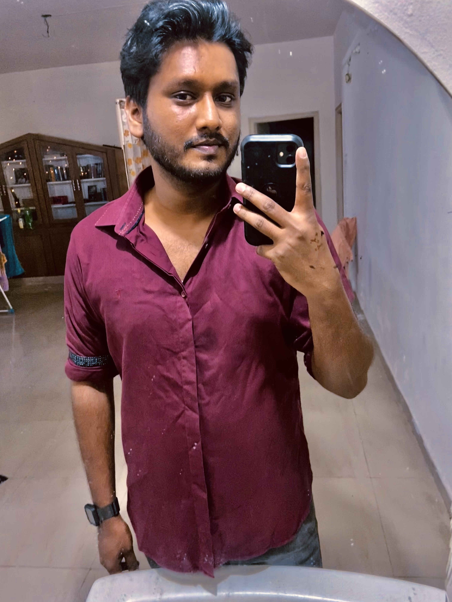

Moka Sandeep

About me
Proactive person with a passion to perpetually try to learn new things.
Dedicated and committed to becoming a dependable and valuable team member.
Academics aside I love making digital art on my iPad and play guitar.
Skills
- Python
- Java
- Regression Testing
- RobotFramework
- Docker
- Procreate
Education
- Integrated M.Tech. in Computer science
- University of Hyderabad, Jul 2016 - Jul 2022
- CGPA - 6.71
- 12th CBSE
- Narayana Junior College 2013 - 2015
- Percentage - 81%
- 10th ICSE
- Kotak Salesian School 2013 Percentage
- Percentage - 81%
Work Experience
Quality Assurance intern
Internship (Summer)
Tekfriday Processing Solutions (May 2019 - Jul 2019)
- Worked in the fraud detection team for Bank Statements.
- Most of the time was spent on data cleaning, data mining, normalisation.
- TEssentially getting the data-sets to our requirements.
M. Tech Project
Student (Jul 2021 - Jul 2022)
- Project titled "Variants of Team formation Problem". It deals with the problem
that is faced in IT industries where news projects come from time-to-time and new teams are required to form for the projects.
Here a project is mathematically a set of skill that the individuals in a team must posses.
- My project deals with experimentation with a modified version of an already existing algorithm on a given data-set.
Contact